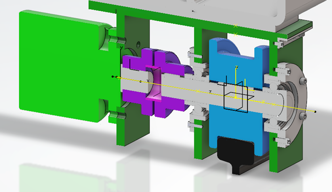
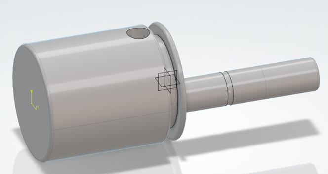

Conception CAO — Dégrilleur & Bielle
Modélisation 3D de pièces mécaniques sur 3DEXPERIENCE en utilisant la conception en contexte et la conception paramétrique. Toute modification d'une cote entraîne automatiquement la mise à jour du modèle 3D.
- Pièce n°1 : Dégrilleur — assemblage multi-corps en contexte
- Pièce n°2 : Bielle — modélisation paramétrique
- Outils : 3DEXPERIENCE · CATIA

